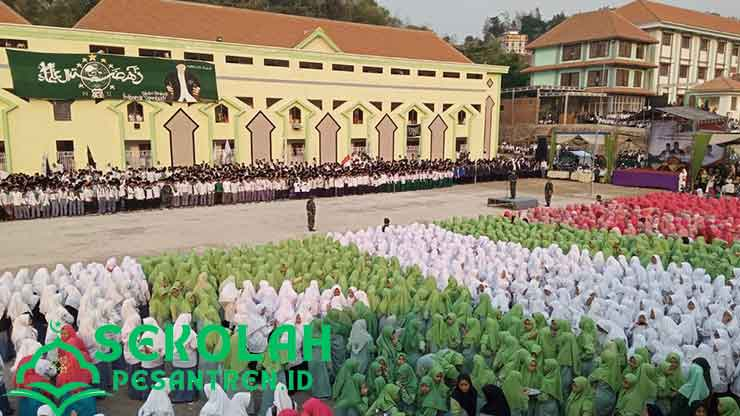
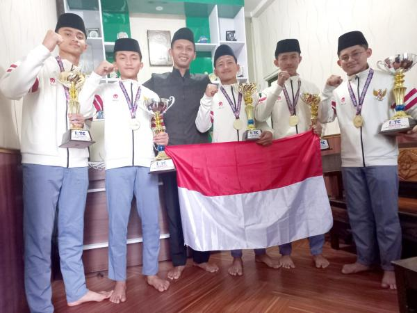

Sejarah Pondok Pesantren MBI Amanatul Ummah

Pondok pesantren ini pertama didirikan pada tahun 1981 oleh kiai Haji Asep Saifuddin Chalim tepatnya diJalan tirtowening no 12 kembang belor Pacet Mojokerto . Awal mulanya hanya ada sebuah villa kecil yang teletak ditengah hutan dan sawah ini yang kemudian dibangun beberapa gedung dan masjid megah yang menghuni kawasan Amanatul Ummah kini. Meski masih tergolong baru namun pondok ini berhasil mencetak prestasi prestasi yang membanggakan antara lain penerima beasiswa kemenag terbanyak .
Tujuan
Terwujudnya manusia yang unggul, utuh dan berakhlaqul karimah untuk Izzil Islam Wal-Muslimin dan untuk keberhasilan cita-cita kemerdekaan
Melaksanakan system yang berlaku di Pondok Pesantren Amanatul Ummah
secara ketat dan bertanggung jawab
Mencetak sebanyak banyaknya santri yang berprestasi yang kelak dapat menjadi ulama besar dan menjadi pemimpin
Prestasi Alumni
Gymnastiar Putra, santri atau pelajar Madrasah Bertaraf Internasional (MBI) Amanatul Ummah lulusan 2022 ini telah diterima di 11 universitas ternama di Amerika Serikat.
Ke 11 universitas yang telah menerima Gymnastiar Putra adalah Colorado School of Mines (Mining Engineering), Curtin University (Mining Engineering), University of Western Australia (Mining Engineering).Selain itu, University of Arizona (Mining Engineering), Wageningen University of Research (Environmental Science), Arizona State University, Oregon State University, Kent State University, Saint Louis University, University of North Dakota, University of Cincinnati.
Gymnastiar Putra yang lahir di Banyuwangi, 13 Mei 2003 ini akhirnya memilih Colorado School of Mines. Keinginannnya itu dikarenakan, putra panggilan akrabnya ingin berkontribusi untuk Indonesia pada sektor pertambangan. Tentunya dengan memperbaiki masalah yang ada di pertambangan Indonesia.
“Jadi dengan belajar di universitas ini, saya bisa mendapatkan ilmu yang tidak bisa saya dapatkan di Indonesia, dan membawanya kembali untuk menerapkannya guna menyelesaikan berbagai permasalahan yang ada (di Indonesia),” ujar Gymnastiar Putra.
Sedari kecil, Gymnastiar Putra memang memiliki keinginan dan tekad yang kuat untuk bisa berkuliah di luar negeri.
“Mulai dari kecil saya memang ingin belajar ke luar negeri. Jadi motivasi kuat untuk belajar ke luar negeri. Itulah, yang mendorong saya untuk belajar di MBI Amanatul Ummah. Madrasah yang telah mengantarkan santrinya untuk melanjutkan kuliah di berbagai negara yang tersebar di benua Eropa, Australia, Asia, dan Afrika,” jelasnya.
Gymnastiar Putra juga tercatat pernah mencatatkan banyak prestasi tingkat internasional. Di antaranya, juara 1 lomba Bahasa Inggris tingkat Internasional di ajang FISO USA 2022, juara 1 invention competition di ajang UNIPO USA 2022. Delegasi terbaik di International MUN 102.0 2022 sebagai The Honorable Mention UNESCO, dan Bronze Medal LKTI International di ajang YISF 2022.
Selain Gymnastiar Putra, Santri lulusan MBI Amanatul Ummah lainny yang punya prestasi memukau adalah Ahmad Rizqi Hidayah. Ia berhasil masuk di National University of Singapore (NUS). Universitas ini terbaik nomor satu se-Asia dan nomor sebelas dunia versi QS World University Rangkings tahun 2022.

Ditemui terpisah, ketua Yayasan Amanatul Ummah, Dr H Muhammad Al Barra Lc. M Hum atau Gus Barra menyampaikan, MBI Amanatul Ummah terus berupaya maksimal dan profesional dalam mewujudkan SDM (Sumber Daya Manusia) yang unggul, utuh, dan berakhlaqul karimah untuk kemuliaan kejayaan islam dan kaum muslimin dan bangsa Indonesia.
“Serta, untuk keberhasilan cita- cita kemerdekaan yaitu terwujudnya kesejahteraan dan tegaknya keadilan bagi seluruh bangsa indonesia tanpa terkecuali,” ujar Gus Barra, jumat (5/8/2022) malam.
Masih kata Gus Barra, dirinya menghimbau kepada para santri MBI atau kelulusan MBI yang sukses, tetaplah rendah hati dan mau membagikan ilmunya kepada orang lain.
“Barang siapa yang punya ilmu, maka bersedekalah dengan ilmu, dan barang siapa yang punya harta bersedekalah dengan hartanya, serta barang siapa yang punya jabatan bersedekalah dengan jabatannya. Artinya, setiap orang yang punya kelebihan bisa bermanfaat bagi orang lain. Asalkan, orang itu mau membagikan kelebihan kepada orang lain,” pungkas Gus Barra.
Kegiatan Santri
Seperti halnya pondok pesantren pada umumnya, Ponpes Amanatul Ummah menawarkan cukup banyak program unggulan kepada para santrinya. Akan tetapi, pondok pesantren tersebut juga tentunya mempunyai beberapa ketentuan dan peraturan wajib dipatuhi peserta didiknya.Selain itu, setiap harinya para santri putra dan putri juga nantinya diwajibkan untuk mengikuti seluruh jadwal kegiatan harian yang sudah ditentukan oleh pihak Ponpes Amanatul Ummah sebelumnya. Jika mereka tidak mematuhinya, maka akan ada sebuah hukuman maupun sanksi harus dijalankan.
Maka dari itu, apabila diantara kalian berencana ingin melanjutkan jenjang pendidikan di pondok pesantren tersebut, ada baiknya cari tahu terlebih dahulu beberapa jadwal kegiatannya. Untuk membantunya, kali ini kami akan memberikan jadwal kegiatan Pondok Pesantren Amanatul Ummah setiap harinya.
Upacara dan Apel Pagi Santri Pondok Pesantren

Saat kegiatan apel pagi tersebut santri harus datang tepat waktu jam 07.00 dan membaca surat yasin serta dalilun najah kemudian diakhiri dengan arahan serta nasehat dari beberapa guru. Nasehat dan arahan tersebut
yang mendorong santri untuk tetap menjaga motivasi belajarnya.
Sehingga dapat mencapai golas yang diinginkan.
Kelas Olimpiade

Seperti halnya pondok pesantren pada umumnya, Ponpes Amanatul Ummah menawarkan cukup banyak program unggulan kepada para santrinya. Akan tetapi, pondok pesantren tersebut juga tentunya mempunyai beberapa ketentuan dan peraturan wajib dipatuhi peserta didiknya.Selain itu, setiap harinya para santri putra dan putri juga nantinya diwajibkan untuk mengikuti seluruh jadwal kegiatan harian yang sudah ditentukan oleh pihak Ponpes Amanatul Ummah sebelumnya. Jika mereka tidak mematuhinya, maka akan ada sebuah hukuman maupun sanksi harus dijalankan.
Maka dari itu, apabila diantara kalian berencana ingin melanjutkan jenjang pendidikan di pondok pesantren tersebut, ada baiknya cari tahu terlebih dahulu beberapa jadwal kegiatannya. Untuk membantunya, kali ini kami akan memberikan jadwal kegiatan Pondok Pesantren Amanatul Ummah setiap harinya.